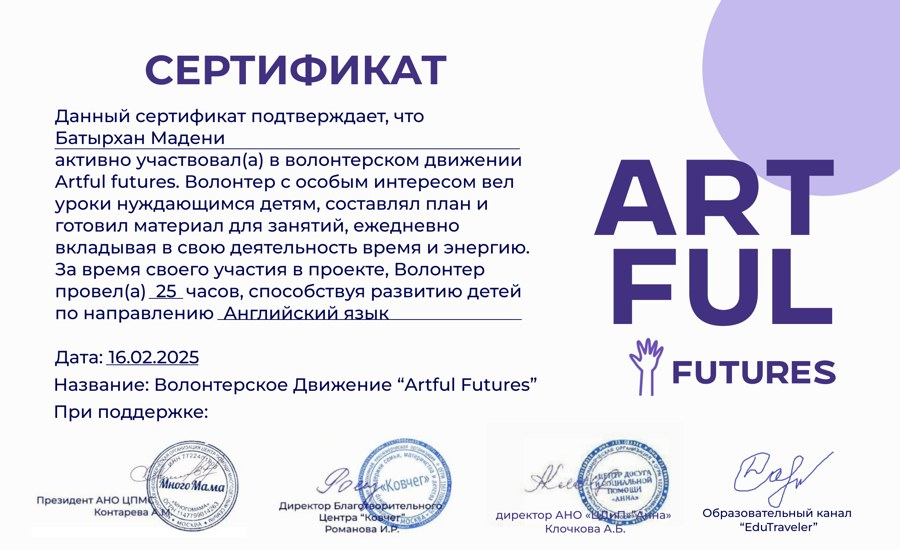
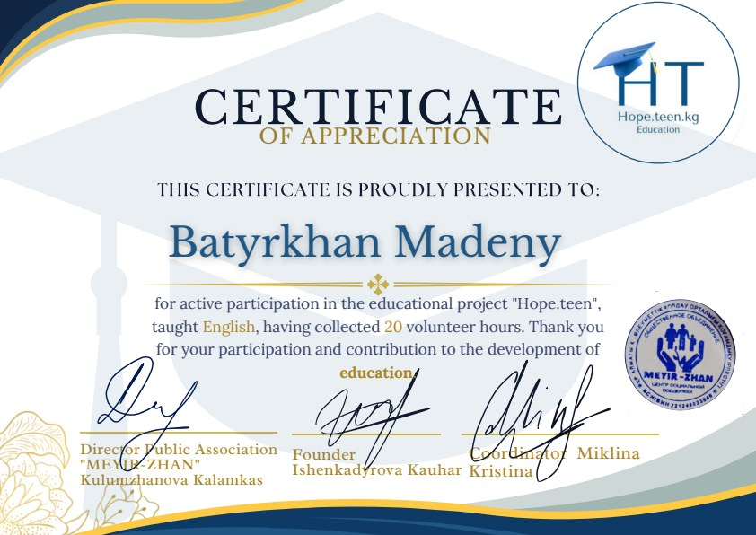
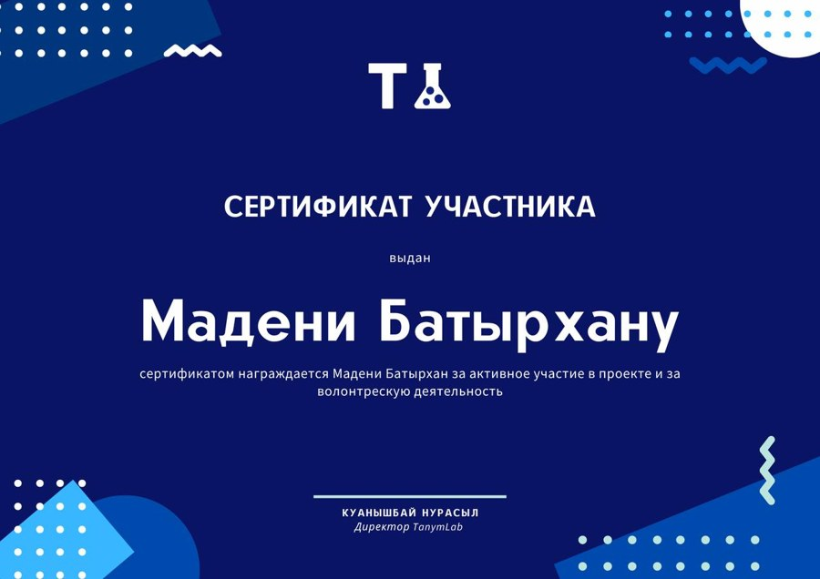

01Aa
Ағылшын тілі
Ережені білуден оны қолдануға көшеміз. Тілді түсініп, бірден тәжірибеде қолданамыз.
- Құр жаттаусыз грамматика
- Сөйлеу тәжірибесі және сөздік қор
- Мектеп бағдарламасына көмек
АҒЫЛШЫН ТІЛІ ЖӘНЕ МАТЕМАТИКА · ОНЛАЙН
Тапсырманы орындап қана қоймай, оның мәнін түсінеміз. Сұрақ қоюға, қателесуге және өз қарқыныңызбен үйренуге болатын сабақтар.
Тегін танысуға жазылу
Сұрақ қою —
оқудың бір бөлігі.
01 / ПӘНДЕР
Ережені білуден оны қолдануға көшеміз. Тілді түсініп, бірден тәжірибеде қолданамыз.
Қай тұста түсінбей қалғаныңызды анықтап, тақырыпты қайтадан ретімен меңгереміз.
02 / КІМГЕ АРНАЛҒАН
Қысқа диалогтардан бастап, ойымызды еркін жеткізуге үйренеміз.
Қажетті тақырыпқа оралып, түсінікті мысалдармен талдаймыз.
Шешу тәсілін таңдауды және әр қадамды түсіндіруді үйренеміз.
03 / ТӘСІЛ
Тақырып қиын болса, сол түсіндірмені қайталай бермей, басқа тәсілді қолданамыз.
Мақсатты талқылап, не жақсы шығатынын және қай жерде сұрақ барын қараймыз.
Қысқа түсіндірме, анық мысал және кері байланысы бар жаттығу.
Тақырыпты бекітіп, көмексіз орындай алатын тапсырмаларды байқаймыз.
04 / БАҒАЛАР
Бар назар сіздің мақсатыңыз бен оқу қарқыныңызға бөлінеді.
Жеке сабақты таңдауБасқа оқушылармен бірге жаттығу. Деңгейі жақын топ жиналған соң басталады.
Топқа жазылуды білуМақсатты талқылап, қысқа тапсырма орындаймыз және оқу жоспарын белгілейміз. Тәсілімнің сізге сай келетінін байқай аласыз.
Танысуға жазылуБағалар теңгемен көрсетілген. Ыңғайлы уақытты WhatsApp арқылы келісеміз.
ҚАЗІР БАЙҚАП КӨРЕМІЗ БЕ?
Тәсілді байқап көру үшін бір тапсырма орындаңыз. Қателессеңіз, себебін бірге талдаймыз.
05 / МЕН ТУРАЛЫ
IELTS 8.0Ағылшын тілі емтиханындағы нәтижем

Ағылшын тілі мен математикадан сабақ беремін. Ағылшын тілін оқыту тәжірибем Artful Futures, Hope.teen және TanymLab білім беру волонтерлік жобаларын қамтиды.
Оқу материалдарын дайындап, сабақ өткізіп, балаларға жаңа тақырыптарды түсінуге көмектестім. Сабақта «түсінбедім» деуге болады — көбіне маңызды қадам осыдан басталады.
06 / ҚҰЖАТТАР
Білім беру жобаларының сертификаттары мен ұсынымдары. Түпнұсқалар сілтемелер арқылы ашылады.

Сертификат · 16.02.2025
Құжатты ашу
Ағылшын тілін оқыту сертификаты
Құжатты ашу
Қатысушы сертификаты
Құжатты ашуҰсыным хаттарының қысқаша мазмұны. Бұл оқушылардың жеке пікірлері емес, жоба ұйымдастырушыларының ұсынымдары.
Хатта сабақтардың жүйелі әрі интерактивті болғаны, балаларға шыдамдылық пен қолдау көрсетілгені айтылған.
Ұсыным хат · 16.02.2025Құжатты ашуЖоба негізін қалаушы ағылшын тілін оқытуды, балаларға көңіл бөлуді және сабақтағы жылы қарым-қатынасты атап өтеді.
Кауһар Ишенқадырова · жоба негізін қалаушыҚұжатты ашуБастапқыда не істей алғаныңызды қазіргі нәтижемен салыстырамыз: ережені түсіндіру, ұқсас есепті өз бетіңізше шығару немесе диалог жүргізу. Меңгерілген тақырыптарды белгілеп, келесі қадамды таңдаймыз.
Тағы бірнеше сұрақ
Иә. Алдымен қиындық тудыратын тақырыптарды анықтап, қажетті негізден бастаймыз.
Бейнебайланыс арқылы мысалдарды талдап, бірге жаттығамыз. Платформа мен уақытты алдын ала келісеміз.
20 минут ішінде танысамыз, мақсатты талқылаймыз және қысқа тапсырма орындаймыз. Содан кейін сабақ жоспарын анықтаймыз.
WhatsApp-қа жазыңыз: деңгей мен кестені талқылаймыз. Сәйкес топ жиналған соң сабақ басталады.
МАҚСАТЫҢЫЗДАН БАСТАЙЫҚ
Мақсатыңызды жазыңыз — сабақты WhatsApp-та талқылаймыз.
WhatsApp · +7 776 441 92 92